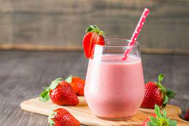

Healthy Breakfast Smoothie
Description
A healthy breakfast smoothie packed full of nutrients that will keep you charged through the morning.
Ingredients
- 2 bananas
- 1/2 cup of oats
- 1/2 cup of nut milk
- 1 tbl spoon cacao nibs
- 1/2 tbl spoon shredded coconut
Steps
- chop bananas into small slices for easy blending
- place chopped bananas into blender
- add cacao nibs and shredded coconut to blender
- add nut milk and blend ingredients until desired consistency
